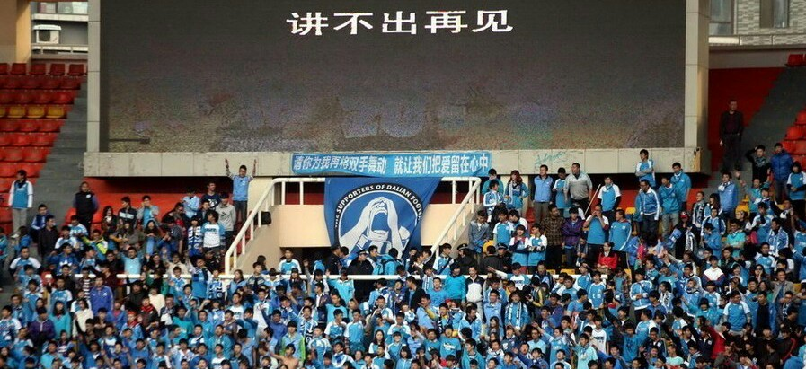
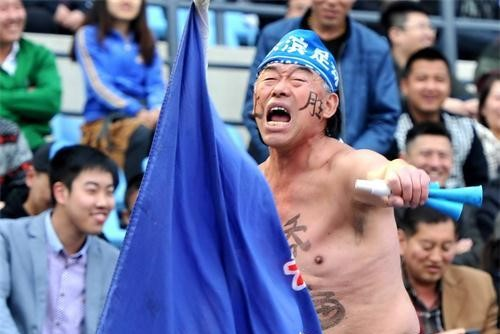
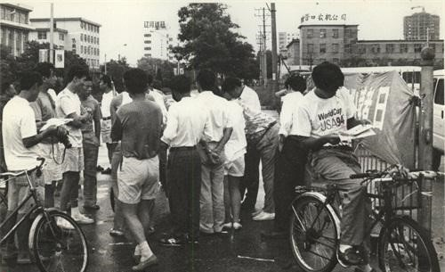
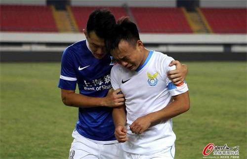
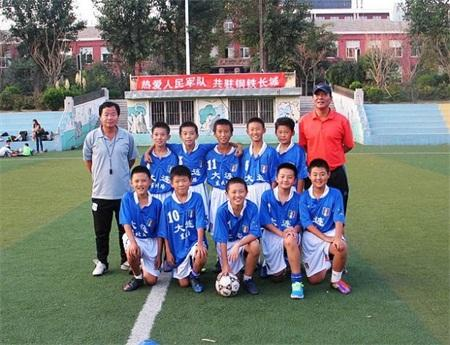

大连，一个没落的足球贵族
8次获得职业足球顶级联赛冠军；曾保持顶级联赛57场主场不败；称霸中国足坛近十年；大连籍球员充斥国家队，大连足球曾经的辉煌毋庸赘述。曾经以足球而自豪的城市，为什么失去了他们的荣耀？
充满海蛎子味鲜腥的大连足球

在大连，有一种海鲜，最能代表这个城市的性格，那就是“海蛎子”。
海蛎子学名牡蛎，是海洋中常见的贝类，在广州一带被称为“蚝”，但是在大连，则被唤作“海蛎子”。南方的蚝肉肥多汁，而北方的海蛎子瘦小且几无肉质。南方的蚝味道鲜香，而大连的海蛎子鲜腥浓烈。特点鲜明的大连话，因此被称为是“海蛎子味”的口音。网上曾经一度疯传的“道牙子”音频，就是这种海蛎子味方言的一个典型。
大连人吃海蛎子，喜欢生吃，他们就喜欢那种浓烈的鲜腥味道。不需要蘸辣根之类的作料，只需一个玉米饼子即可，这种粗放、生猛的吃法，造就了大连人的独特性格。粗犷、浓烈、直率、刚猛……当这种性格融入到足球中，便成就了大连足球独特的特色。当年李明、张恩华、小王涛、孙继海他们代表的大连万达队，展现的就是这种足球性格的典型味道。
同样是因为港口开埠，大连和青岛、上海、广州等城市一起，在百年之前就有幸接触到足球。但是在这些拥有深厚足球底蕴的城市中，大连的作用和特点十分鲜明而突出。这个为中国足球贡献一大批国脚的城市，也因为足球而名声远扬。从某种意义上讲，是足球成就了大连人。
林乐丰曾经说过，大连人因为经常吃海鲜，造就了强健的身体，成为适合踢球的一个先决条件。当年孙继海在国青队集训时，总是在宿舍里支起一个小炉子，熬制一种海鲜汤，令小伙伴们十分惊异。其实孙继海只是在吃海参。在很多内陆人都不清楚海参长什么样的时候，孙继海的父亲孙亮宗，就开始用海参来打造“中国太阳”的强健体魄。作为体能教练的孙亮宗曾经故弄玄虚地说，他一直在为登陆英超的孙继海，熬制秘密营养液。
曾经执教过大连实德的韩国教练朴成华曾经羡慕地说，像李学鹏这样身体条件的球员，在韩国是很难能找到的。当年大连实德俱乐部的饮食，在中超球队中是首屈一指的，每餐球员都能吃到海参、扇贝、鲍鱼等海鲜补品，不过，像味道鲜美，但不适合球员吃的蟹子，却很少上球员的餐桌。当年阎世铎来大连实德俱乐部参观时，大连体育局的一位领导，指着厨师给球员准备的一大盆海参，说：“阎主席，这东西大补啊，壮阳！”
大连足球总是能够在关键时刻阳刚起来，这是大连球迷一直引以自豪的重要地方。从大连万达到大连实德，从大连实德到大连阿尔滨，大连足球一直充满着浓烈的海蛎子味道。
而这种鲜腥的性格，让他们总是有一种强烈的优越感，就像当年落魄的八旗子弟，总是不肯放下自己的富人架子。
在大连不聊球无法融入工作单位

大连人对于足球的那份自信心，是由来已久的。
大连人一直认为，在职业化足球之前，辽足十冠王的头衔中，就有大连人一部分不小的功劳。因为在老辽足的队伍中，有数不清的大连籍球员。那个时候无论是辽足，还是八一等国内著名的足球专业队中，都能看到大连球员的身影。
中国足球职业化一开始，在外踢球的马林、孙伟、柳忠长、石磊等球员纷纷回归大连队，结果失去大连足球支持的辽足，很快就降入了甲B联赛中。而在中国足球职业化的第一年，大连万达队就夺得联赛冠军，开始了在中国足坛长达近十年的称霸历史。从大连万达的55场不败，到大连实德的第八颗星，大连足球创造了前无古人后无来者的辉煌战绩。也培养出了大连足球独有的霸气和大连球迷独有的傲气。
曾经有一位大连老球迷自豪地回忆说，看万达足球，我就没在主场看过输球。从1994年职业联赛开始，一直到1998年赛季结束，大连万达保持57场主场不败的纪录，在五年中大连队没有让家乡球迷看到输球。张恩华曾经说过，“在主场，我们就不知道输字怎么写。”
每到联赛赛期的周末，大连就像过节一样。球票往往一票难求，大连市人民体育场附近的高层建筑——教师大厦，竟然在比赛时每家阳台都站满人。那里的房子当时在大连人心中是最好的，因为每个周末都可以看免费的比赛。
每每主场比赛时，大连这个城市都安静了很多。街上的行人少了，商场里闲逛的人也少了，甚至街上的汽车也少了许多。就连很多出租司机，也要找个饭馆或者澡堂子，和一群球迷一起守候着电视直播。那个时候，大连的城市中心就是大连市人民体育场，当这里爆发出巨大的欢呼声后，声波会迅速辐射到城市的每个小角落——一家人聚集的电视机旁，餐馆里悬挂的电视机下，澡堂子里摆着电视机的休息室……这个城市的每个人，都能感受到足球的快乐和幸福！
在大连人民体育场外场地旁，有一个著名的球迷角。几乎每天都会聚集一批球迷，在那里侃球聊天。这在全国都是一大奇观。
单位新分配来的大学生，就会有老工人过来传授经验：要想迅速融入这个城市，赶紧看球。因为在九十年代的大连，无论是办公室里还是餐桌旁，人们说话三句就可能扯上足球，如果你是一个球盲，可能插话的机会都没有。
九十年代末，大连的企业家去香港参加招商会，他们惊奇地发现，很多香港人都知道大连，因为大连有一个球队叫大连万达。
十几年后，大连足球竟然遭遇降级的命运。就像曹雪芹遭遇家道败落一样，巨大的心理落差，让大连球迷悲伤不已。虽然大连球迷没有像八旗子弟那样，念念不忘自己祖上曾经大富大贵过，但是大连足球断崖式跌落，还是给这个城市带来巨大的心理创伤。
降级是大连足球在还债

1985年，组建仅仅两年的大连足球队，便进入到全国甲级球队的行列，并获全国甲级联赛第三名，结束了中国甲级足球比赛“有大连人无大连队”的历史。三十年后，大连足球告别国内顶级职业联赛，熟悉大连足球百年风云的朱元宝老人感叹说：“三十年河东，三十年河西。”
大连足球在占尽中国足球风头的二十多年后，也逃不过“风水轮流转”的宿命。在大连阿尔滨降级的那个下午，一位跟随大连阿尔滨多年的足球记者感慨地说：“2012年大连阿尔滨收购大连实德，将大连实德的中超名额废掉了，结果已经掉级的上海申鑫因祸得福而留在中超，两年后上海申鑫亲自送大连阿尔滨去中甲。”甚至有球迷还记得，2012年11月2日，大连阿尔滨老板赵明阳宣布球队正式收购大连实德，两年后的这一天，大连阿尔滨掉进了中甲中。
从来没有掉级过的大连足球，在经历了多次保级之后，终于在2014年见到了城市足球没落的标志。
如果说1999年大连万达的保级，是这支球队易主前一次“假摔”的话，那么大连实德在2005赛季之后，屡次面临保级的危险，是大连足球固步自封、雄风不再的一个重要风向标。值得一提的是，2012赛季末期，大连实德在“无主”的情况下，依然在河南客场的保级生死战中战胜对手，在实现自己保级的同时，将对手送进了中甲。大连足球这次涉险过关，既体现出了大连足球的运气，也展现出大连足球应有的霸气。
那场比赛赛后，大连实德将士兴奋异常，完全是一种夺冠的感觉。赛后还不知道自己未来在哪里的实德将士，都表达了这样一种态度，“大连队不能在我们手中掉级了。”主教练柳忠长这样说，老队员张耀坤、朱挺 等人也是这样说的。
在2014赛季的保级时刻，这支欠薪很久的大连球队，已经失去了应有的斗志和霸气。主场输给辽宁宏运之后，经历过球队保级的吕鹏、赵宏略等人都落下了眼泪。因为他们更清楚，此时保级的主动权已经不在大连队手中了，至于他们最后一战挑战上海申鑫，那是看人家的脸色行事。
2014赛季的保级更像是一场策划精密的大戏，最终大连阿尔滨平球掉级。有圈内人士赛后说，阿尔滨赢球也保不了级。近几年来，大连足球违背足球规律，走了不少弯路，大连足球到了该还债的时候了。
保住大连足球青训体系是头等大事

掉级不是世界末日，但如果不反思，不警醒，可能大连足球重现辉煌会十分艰难。如果大连足球依然活在“祖上曾经富过”的记忆中，甚至认为“当掉几件传家宝”就可以东山再起的话，那么大连足球真就走到了穷途末路了。
郝海东说，大连足球需要十年时间，才有可能恢复元气。而现在，围绕在大连足球身上的很多疑问都没有答案：阿尔滨是否能坚持经营足球，这支大连队在中甲如何调整，大连足球人才培养的体制能否延续……这一系列的问题，现在都没有明确的说法。这就意味大连足球的明天依然没有光亮，现在大连足球只有悲伤没有沉思。
大连阿尔滨的降级，是大连足球体制和机制的失败，是这个城市经济实力的落败，更是大连足球耿直、傲慢性格的结果。大连再无万达、实德这样经济实力的企业来经营足球，这个城市的足球环境、氛围、人气也在近十年的低迷中，败落得差不多了。
或许一支球队的降级，并不会动摇大连足球的根基，但是如果大连足球因此失去了热情和土壤，那将是中国足球的一大悲哀，因为大连足球的人才培养基地，可能会因此而一蹶不振。放眼中超16支球队中，几乎没有一支球队没有大连籍球员。广州恒大、广州富力、贵州人和 等中超强队，都有大连籍球员在队中扮演重要角色。国足每次集训名单中，虽然大连队球员寥寥无几，但是大连籍球员一抓一大把。近十年来大连的城市球队成绩不佳，加速了大连籍球员在中超的扩散速度，导致大连籍球员在中超遍地开花，甚至有人统计过，中超16家球队几乎没有无大连籍球员的。
当年大连籍球员托起了大连队的辉煌，成为中国职业联赛的翘楚；如今大连籍球员遍地开花，成为中超赛场上一股不可忽视的力量。这都得益于大连足球有着很好的人才成长土壤和渠道，一批又一批足球人才不断涌现，成为中国足球发展的重要力量。这种人才培养的成功，不仅是因为大连有很好的足球氛围，和层出不穷的足球苗子，更重要的是，大连足球拥有一条不错的人才成长渠道，那就是职业化俱乐部的青训体系。
尽管近几年很多中超俱乐部都到大连招收青少年足球人才，但是更多的足球家长，还是希望孩子别过早“远走他乡”，在自己的身边踢球和学习，并且进入到城市球队的青训体系中。这样不仅孩子能够有一个更好的成长环境，而且走踢球这条道的风险和投入要小一些。但是一旦这个城市连中超球队都没有，自然会影响家长和孩子踢球的热情，也堵塞了很多家庭的足球培养计划。
大连足球也逐渐失去了尊重足球人才的氛围。2012年孙继海在代表贵州客场与实德队比赛时，遭遇家乡球迷的一片谩骂。“我不敢说自己是大连足球的功勋球员，但是赛前大屏幕上播放着从万达队到实德队几次捧杯的画面，那些画面我都在场，看得我眼泪都差点流下来。就这样，我回来比赛竟然得不到起码的尊重。”孙继海谈及那次经历有感而发，“我们的足球文化和其他国家的差距太大了。”
一旦大连这个城市，失去了足球人才培养的功能和尊重足球人才的氛围，那么中国足球将失去一个重要的人才基地。这将是大连足球降级的最大隐患，如何保留这个城市的青训体系不受冲击，如何让大连足球重新定位，或许才是大连足球真正需要做的头等大事。